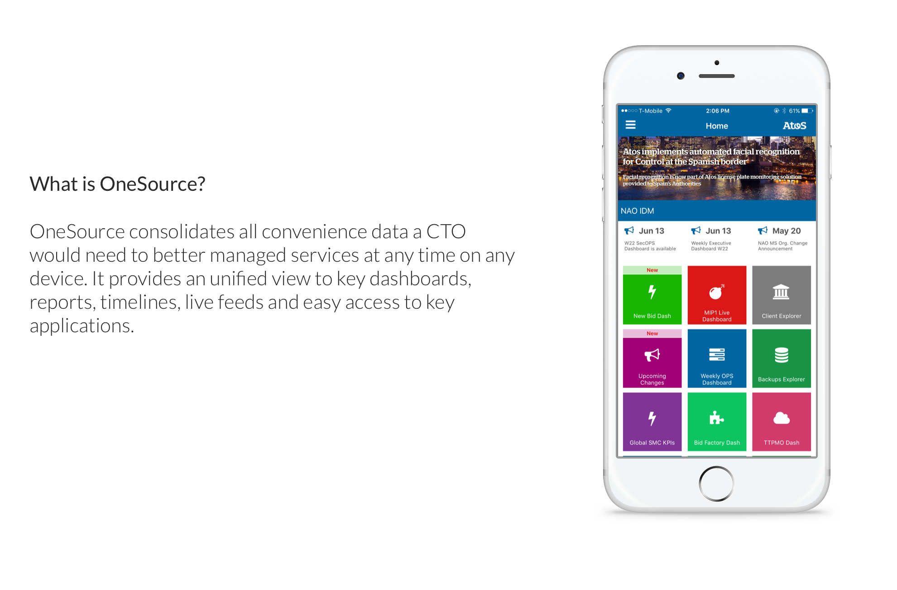
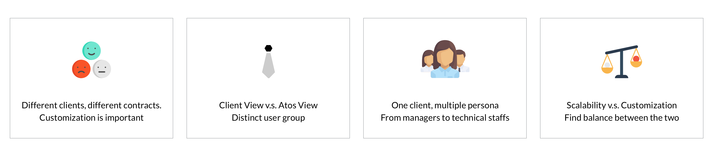
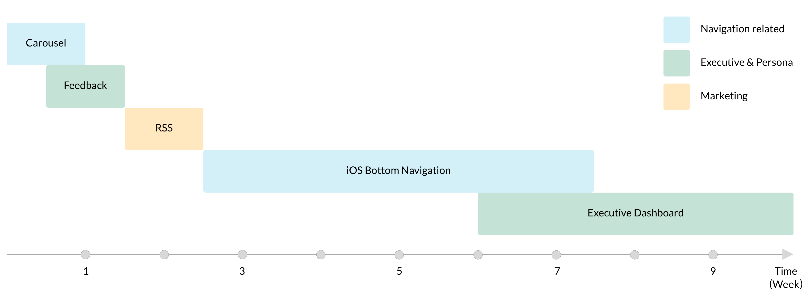
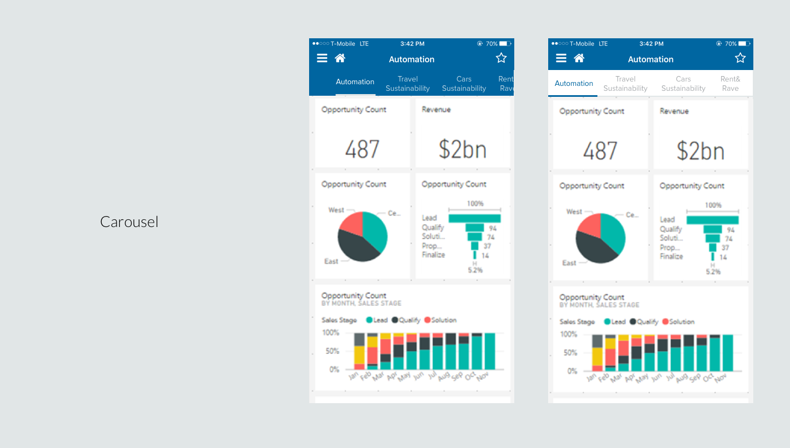
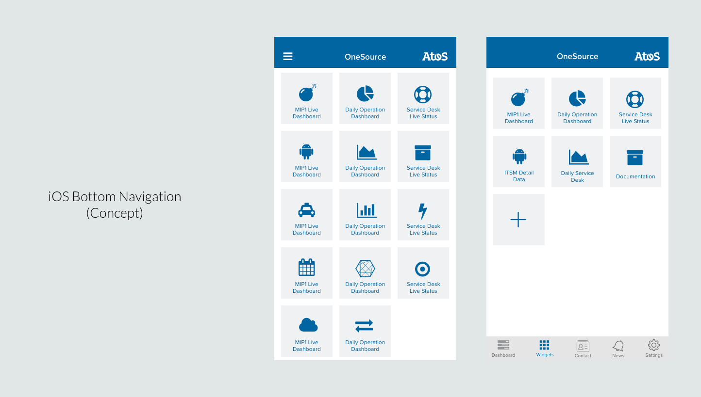
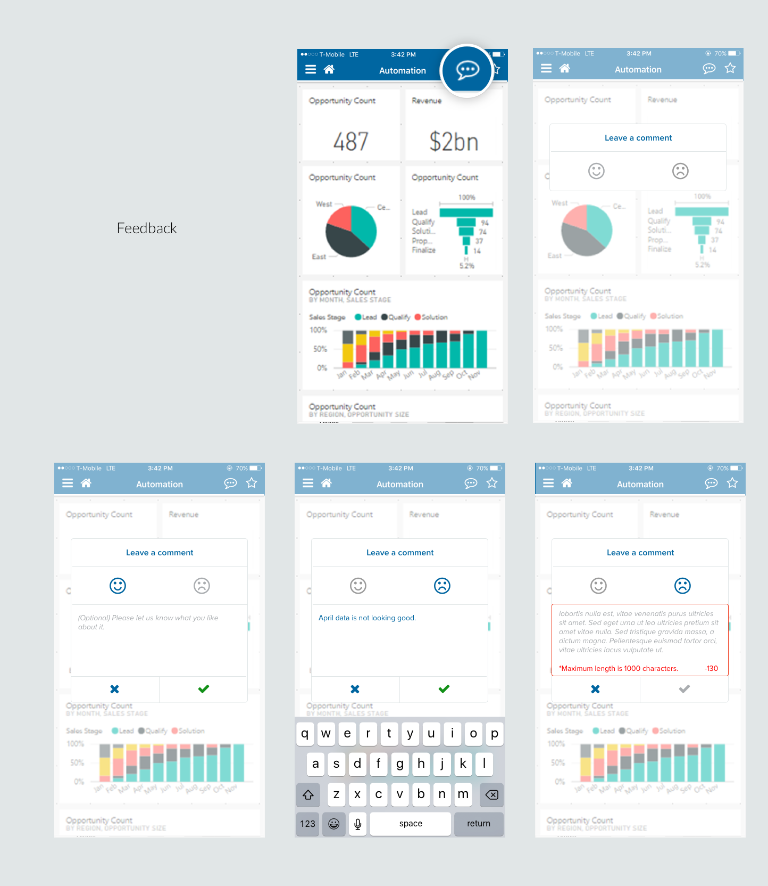

Atos OneSource
MY ROLE
UX Designer
DATE
Nov 2016 - Present
METHODS & TOOLS
Sketch 3
Usability Testing
APPROACHES
Wireframes
Prototyping
Atos is an IT service company that provide various IT solutions to its clients. Atos OneSource is a mobile platform to provide client CTO / CIO and personnel with other managerial roles with consolidated information of Atos service in the forms of dashboards, reports, timelines and live feed. The company goal of building OneSource is to increase client retention by providing an added value product, to increase client exposure of Atos offerings and to increase internal operational efficiency through data / insights.
To comply with my non-disclosure agreement, I have omitted and obfuscated confidential information in this case study. The information in this case study is my own and does not necessarily reflect the views of Atos.
My Role
I design for Atos OneSource across iOS and Android since Nov 2016. My goal is to improve the existing user experience. I led the design to address customer pain‐points related to navigation, functionality discovery and design where should marketing material go. As the only designer in the team, I worked closely with project managers and developers in launching new feature to achieve business goals of the product.
Research & Scope
OneSource is a product that is rather complex in nature. It deals a complex user group with unique business and technical knowledge. I started by interviewing with 15 people with different roles within Atos to understand the tool from a broader business perspective and context of usage, which helped me to further define the scope of my design.
After getting feedback from account team who work closely with customers on a daily basis and Atos personnel who manage or indirectly work with the the account team, I identify the following challenges I would face in this design process.
Because the product is already in use, there is legacy issue I also have to consider. The product owner doesn’t want too big changes within the app. Then me and the product owner discussed and defined among my suggested changes which would be “Design quick-wins” that can be implemented in the short term and which will be “implemented step by step” in the long term.
Usability testing & Feedback gathering
Clients, especially higher executive client are very difficult to arrange meeting with. They are too busy to run the usability tests.The account team helped me in setting a first round usability testing with 6 users including 1 higher level manager, 3 mid-management users and 2 technical managers.

Lost in navigation
Navigation can be easier. Jumping from dashboard to dashboard was not intuitive for the users.Higher management v.s. Middle management
Executive level manager wants high level data. Mid-level manager wants to know who is in charge of a specific ticket. Technical manager wants to drill down to a specific ticket.Mobile and Web
Web version is more valued among technical managers. They use the web to access more complex data. Mobile is to check system health and get alerts for critical incidents.
Not just situation
Just understanding the system status is not enough, they want solution, including who to contact, joining a bridge call and getting the root causes.Because the product is already in use, there is legacy issue I also have to consider. The product owner doesn’t want too big changes within the app. Then I have to find the mid-point to balance the product roadmap and the user experience. The product owner and I discussed and defined among my suggested changes which would be “Design quick-wins” that can be implemented in the short term and which will be “implemented step by step” in the long term.
Solutions
To address the navigation /discoverability issue
 To address the needs for different persona, e.g.the executive level users who needs high level-data and also wants to get in-and-out the app easily, we provide them with Executive Dashboard. For technical managers who need to drill-down one ticket and get detail information, we provide the ability detailed view on laptop.
 Note: These are only partial of the work that I did for Atos OneSource.- Target User: Client Technical Management Team
- Date: Nov 2016 - Present
- Role: UX Research, UX Design